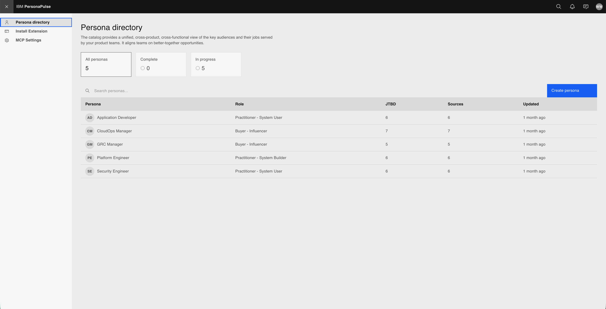
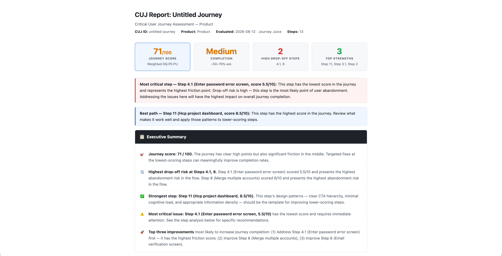
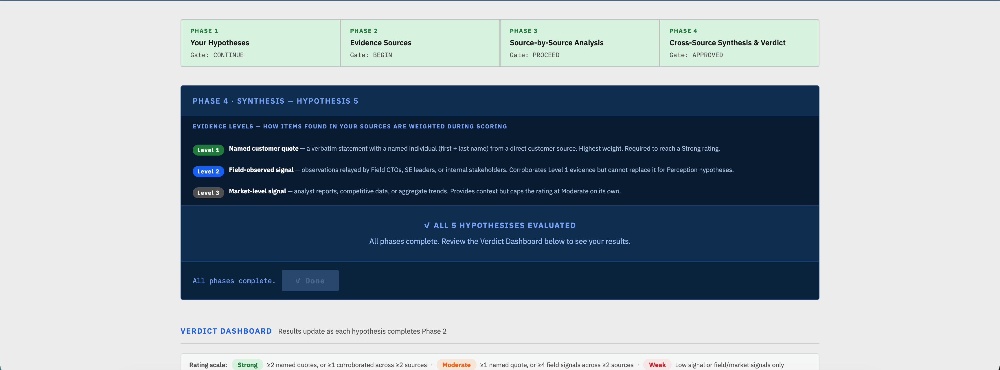
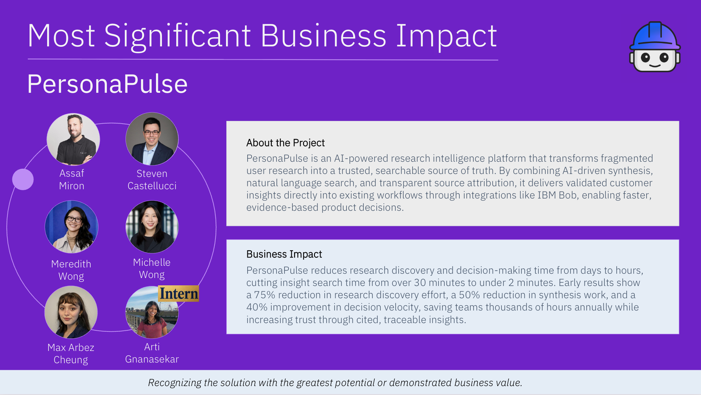

Context
Led the creation of AI-powered research and decision-support tools that helped teams find, validate, and act on customer insights more effectively, streamlining the analysis of personas, Jobs-to-be-Done (JTBD), user journeys, and hypothesis evidence to connect customer evidence directly to product decisions. Working across research, design, engineering, and product leadership, I drove projects from problem discovery through design, prototyping, implementation, and executive presentations, making complex research workflows more efficient, accessible, and scalable.
Projects


An AI-powered research intelligence platform that transforms fragmented user research into a searchable source of truth, enabling teams to quickly find validated customer insights and make evidence-based decisions. Through MCP integration with AI agents like IBM Bob, it delivers research and persona knowledge directly within existing workflows.

An AI-powered critical user journey evaluation platform built on IBM Bob that automatically converts UX research into scored journey evaluations, prioritized recommendations, and traceable insights. By linking findings directly to journey steps and supporting evidence, it makes research synthesis faster, scalable, and repeatable.

Hypothesis evidence dashboard enables users to evaluate their hypothesis against supporting sources, workflows, and roadmaps, generating a comprehensive report that highlights strengths, provides evidence-based validation, and recommends actionable next step.
Side Quest

My team and I had the opportunity to submit one of my projects to the WatsonX Challenge, a global internal hackathon with over 140,000 employees participating this year. Our project received the Most Significant Business Impact award within the Automation Pillar, which was incredibly exciting and rewarding to see our work recognized at such a large scale.
Feedback
Kind words from some of the incredible people I had the privilege of working with:
Arti was an intern on my team in the summer of 2026. Her responsibilities focused on building AI-enabled infrastructure for our Product and Design organization, including a persona intelligence platform, an AI engine for evaluating design against critical user journeys, and a hypothesis testing system.
In just three months, she has achieved much more than I would have expected even of experienced researchers. The persona intelligence platform where Arti led execution of cross-functional work won an executive award for Most Business Impact. The hypothesis testing system is catching fire across teams and is now being used to test cross-portfolio hypotheses at the business-unit level.
What stands out about Arti is not just the excellence of her work but – equally – the attitude she puts behind it. Arti has a very strong sense of ownership and accountability. She is responsible, proactive, and hard-working. She is equally strong at collaborating and worked effectively across teams and functions. What distinguishes her from most other early career professionals is her resilience. When faced with challenges, roadblocks, or unexpected changes, Arti remained focused on finding solutions and making progress. She approached ambiguity with maturity and professionalism, consistently maintaining a positive attitude and reflecting on what she learned through each situation.
I have rarely seen someone so mature at this career stage. Arti is a rising star of the highest caliber.
I highly recommend Arti for her strong ownership, collaboration skills, and growth mindset. During her summer internship, she led the PersonaPulse project, conducting stakeholder discovery interviews, synthesizing requirements, and presenting concepts to drive alignment and refine the team’s direction. This resulted in an end-to-end workflow that supported teams in thoroughly understanding their target audiences. Throughout her time with us, she consistently partnered across teams, demonstrated initiative in navigating ambiguity, and showed impressive growth in stakeholder communication. Arti combines technical and design capabilities with curiosity, resilience, and a proactive approach that will make her a valuable asset to any team.
I am extremely grateful for the opportunity to work alongside such a driven and supportive team that encouraged me to explore beyond the boundaries of a traditional design role. Throughout my internship, I strengthened my skills across design, user research, and engineering, while learning how each discipline can mesh together to turn research into meaningful product decisions. This experience pushed me to grow not only as a designer, but as a more thoughtful and well-rounded problem solver.
Interested to learn more?
The specifics are confidential, but I'd love to talk about the work in more depth on a call. Reach me at arti[dot]gnanam[at]gmail[dot]com !